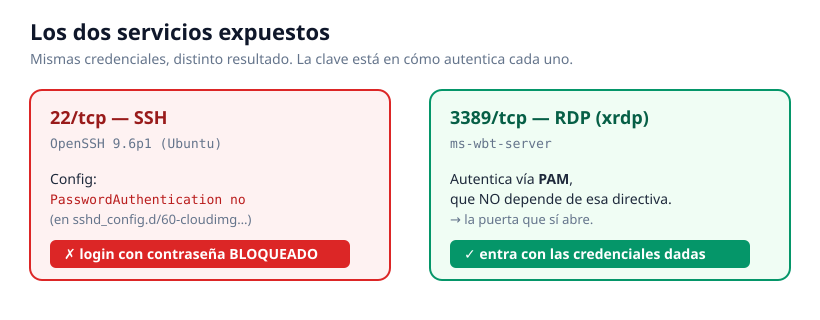
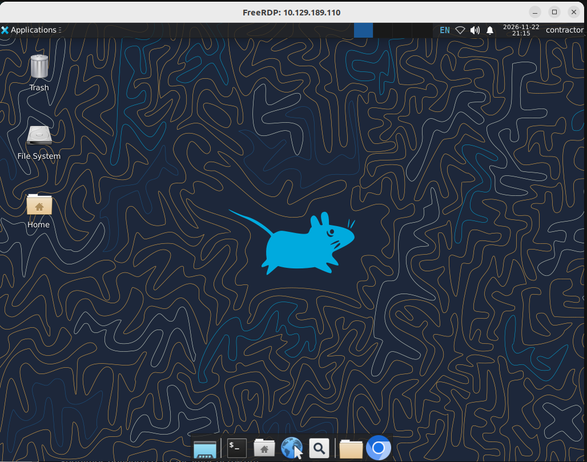

Etapa 0 · Setup¶
En esta etapa no hay deducción: la máquina te lo entrega. Cubre cómo llegas a tener un shell en el workstation: la VPN, los servicios expuestos y el comando de entrada. El juego deductivo empieza después, en Discovery.
0.1 · La VPN¶
OpenVPN levanta la interfaz tun0 y enruta tu tráfico hacia la red del laboratorio. Sin
esto, tus paquetes nunca alcanzan 10.129.x.x. No es atacar nada: es conectar tu máquina a la red.
Marcador de éxito
La VPN está arriba solo cuando aparece la línea:
Mientras no esté, no estás conectado aunque el proceso siga vivo. Verifica siempre:Incidencia real de esta sesión
El primer .ovpn se quedaba en TLS handshake failed por el camino UDP 1337. Se
resolvió cambiando a otro servidor / a TCP 443 (443 es HTTPS: ninguna red lo bloquea).
Detalle en logs/vpn_connectivity.md.
Diagnóstico real: la VPN dice Completed pero no llego a la máquina
Síntoma. La VPN conecta sin error (Initialization Sequence Completed), pero RDP falla:
xfreerdp ... /v:10.129.247.82 ...
[ERROR][com.freerdp.core] - freerdp_tcp_connect: ERRCONNECT_CONNECT_FAILED [0x00020006]
[ERROR][com.freerdp.core] - failed to connect to 10.129.247.82
Trampa mental. El log de OpenVPN está impecable, incluso instala la ruta correcta:
PUSH_REPLY,... route 10.129.0.0 255.255.0.0 ...
net_route_v4_add: 10.129.0.0/16 via 10.10.16.1 dev tun1
Initialization Sequence Completed
El reflejo de diagnóstico (de fuera hacia dentro):
pgrep -a openvpn # ¿cuántas VPN hay corriendo?
ip -br link show type tun # ¿hay túneles colgados (tun0, tun1, ...)?
ip route get 10.129.247.82 # ¿por QUÉ túnel sale el tráfico a la máquina?
ping -c3 10.129.247.82 # ¿llega el host?
nc -zv 10.129.247.82 3389 # ¿está arriba el puerto RDP?
Lo que encontramos: dos OpenVPN vivos a la vez, de servidores distintos:
openvpn machines_us-5.ovpn → tun0 (zombi de una sesión anterior, ~4 h)
openvpn machines_us-4.ovpn → tun1 (el nuevo, el de Layover)
Las dos instalaron la misma ruta a 10.129.0.0/16, y solo una puede ganar:
Tus paquetes RDP se iban por el túnel equivocado, hacia un servidor que no tiene enrutada tu
máquina → ping 0/3, puerto 3389 cerrado, CONNECT_FAILED.
La causa (dos cosas a la vez):
- Técnica: a un mismo destino (
10.129.0.0/16) solo puede apuntar una ruta efectiva; el túnel zombi la robó. - De HTB: solo admite una sesión VPN activa por cuenta.
El arreglo — dejar UNA sola VPN limpia:
sudo pkill -f openvpn # 1) matar TODAS las VPN
ip -br link show type tun # verificar: tun0/tun1 deben desaparecer
pgrep -a openvpn || echo "sin openvpn: OK"
sudo openvpn .../machines_us-4.ovpn # 2) reconectar SOLO la de Layover
ping -c3 10.129.247.82 && nc -zv 10.129.247.82 3389 # 3) re-test antes de RDP
Con una sola VPN, la ruta a 10.129.x apunta al servidor correcto y la máquina aparece:
Lección: antes de conectar la VPN, comprueba que no haya otra colgada (pgrep -a openvpn,
ip -br link show type tun). Un túnel zombi de una sesión previa es un clásico de
"la VPN dice Completed pero no llego a la máquina". Y si tras limpiar sigue sin responder, el
problema ya no es la red sino la máquina: apagada, o con IP nueva tras un respawn (HTB
rota la IP). Verifícalo en el panel.
0.2 · Los dos servicios expuestos¶
Con la VPN activa, se escanea el box con nmap:
-sV detecta la versión de cada servicio, -sC ejecuta los scripts por defecto y -oN guarda la
salida en scan.txt. El detalle de cada opción está en
Conceptos necesarios.
Líneas relevantes del resultado:
Cada fila es un puerto. STATE open indica que hay un servicio escuchando, SERVICE es el
protocolo que nmap reconoce y VERSION es el programa que lo atiende.
- 22 (SSH): acceso por línea de comandos.
- 3389 (RDP / xrdp): escritorio remoto gráfico. nmap lo nombra
ms-wbt-server.
Este escaneo revisa los 1000 puertos más comunes. Para confirmar que no hay otros servicios en
puertos altos, se repite con -p-, que revisa los 65535.
Con credenciales en mano, el reflejo es SSH. Pero el intento es rechazado:
Ese es el mismo mensaje que verías con una contraseña incorrecta: no distingue "credencial mala" de "acceso denegado por política".
Intentemos con otro servicio: RDP.
0.3 · El comando xfreerdp¶
El comando con el que entramos:
xfreerdp /u:contractor /p:'Contractor2026!' /v:10.129.247.82 \
/cert:ignore +clipboard /dynamic-resolution
Pieza por pieza:
xfreerdp— el cliente RDP de FreeRDP (abre el escritorio remoto)./u:contractor— usuario con el que te autenticas./p:'Contractor2026!'— contraseña; comillas simples porque el!es especial para el shell./v:10.129.247.82— víctima / destino (IP[:puerto];:3389es el default, por eso se omite)./cert:ignore— xrdp usa un certificado autofirmado; sin esto el cliente se detiene a preguntar.+clipboard— portapapeles compartido host⇄remoto (pegar comandos/creds cómodamente)./dynamic-resolution— la ventana se adapta al redimensionar (opcional).
Convención / vs + (clic para ver)
En FreeRDP, /opcion:valor configura algo y +opcion / -opcion activa / desactiva
una función. Por eso es +clipboard (activar) y /cert:ignore (configurar).
Opcional: ¿por qué SSH rechazaba la conexión? (curiosidad, no es clave)
Ya dentro por RDP, inspeccionamos la config de SSH desde la terminal:
grep -ri passwordauthentication /etc/ssh/
# /etc/ssh/sshd_config.d/60-cloudimg-settings.conf:PasswordAuthentication no
Un drop-in (/etc/ssh/sshd_config.d/60-cloudimg-settings.conf) con PasswordAuthentication
no desactiva el login por contraseña vía SSH. En cambio, xrdp autentica vía PAM, que no
se ve afectado por esa directiva → por eso RDP sí abría.

Lección: cuando SSH rechaza una contraseña que sabes correcta, revisa sshd_config y
sshd_config.d/. Un override en un drop-in es fácil de pasar por alto.

airside-ws01 como
contractor.Siguiente: Táctica 1 · Discovery: descubrir la red del objetivo.